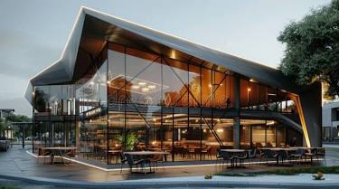
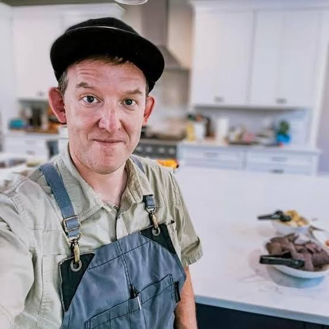
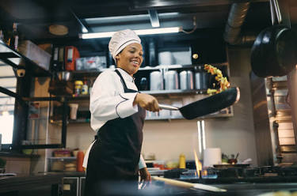
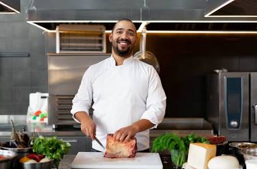
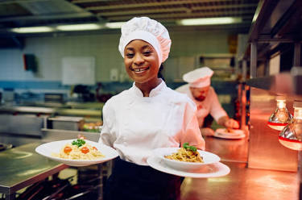
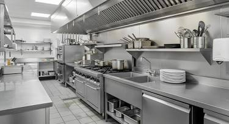
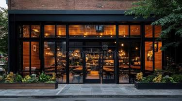

ABOUT US

The Foundation
Urban Kitchen did not start in a polished dining room; it began in a repurposed shipping container in a vacant lot in downtown Brooklyn. Founder and Chef Elias Vance was tired of "industrial" food.Having grown up on a poultry farm in Vermont before moving to the city, he missed the taste of soil and season. He opened Urban Kitchen as a lunch window, serving only three items that changed daily based on what he could source from local rooftop gardens.
The restaurant gained a cult following for its "Concrete to Crop" philosophy. In 2017, Elias moved the operation into a historic brick warehouse. He kept the "Urban" name to honor the city's energy but installed a massive, open-fire hearth to bring back the "Kitchen" of his childhood. The aesthetic was intentional: exposed steel beams paired with reclaimed wood tables.
Urban Kitchen’s mission is to prove that "seasonal" isn't just for the countryside. The restaurant famously operates on a "Zero-Mile" initiative, partnering with urban hydroponic farms located within the same zip code. They don't have a freezer on-site; if it wasn't picked or butchered this morning, it doesn't get served.
Mission Statement
To bridge the gap between the city and the soil by serving honest, seasonal food that honors the producer, the ingredient, and the guest.
Our Philosophy About Food And Services
- The Ingredient First: We believe that a chefs job is to stay out of the way of a great ingredient. Our menu is dictated by the sun and the soil, not a corporate calendar.
- Hyper-Local: If it grows within 50 miles, that is where we buy it.
- Purity: No additives, no heavy processing, and absolutely no freezers.
- Radical Transparency: We want you to know exactly where your food comes from. Every menu lists the specific farm or rooftop garden where the produce was harvested that morning.
- Service as Sanctuary: In a city that never stops moving, we provide a place to slow down. Our service philosophy is "Quiet Excellence."
- Warmth: We treat every guest like a neighbor, not a table number.
- Knowledge: Our staff are experts on the origins of every dish.
- Community: We don't just serve food; we host the conversations that drive our city forward.
- Circular Responsibility: Sustainability is not a trend; it is our duty. We operate on a Zero-Waste model, composting all organic scraps to return them to the very urban farms that supply us.We also donate any excess food to local shelters and food banks.
- Innovation in Tradition: While we honor the roots of our ingredients, we are not bound by tradition. Our chefs are encouraged to experiment with new techniques and flavor combinations, as long as they respect the integrity of the ingredient.
The Restaurant Chefs

Chef Gordon Ramsay: Known globally for his high-energy presence on shows like Hell's Kitchen and MasterChef, Ramsay is a master of technical skill and discipline. He has built a massive culinary empire that includes multiple Michelin stars and award-winning restaurants across several continents, with his signature Beef Wellington being a hallmark of his menus.

Chef Anne-Sophie Pic: One of the most decorated female chefs in history, Pic holds 10 Michelin stars across her various establishments. She is the fourth woman ever to lead a restaurant to three Michelin stars and is celebrated for her "White Millefeuille" and a philosophy that prioritizes technical perfection as the foundation for culinary art.

Chef Alain Ducasse: >A titan of modern gastronomy, Ducasse has earned an extraordinary 21 Michelin stars throughout his career. He made history by becoming the first chef to own three-Michelin-starred restaurants in three different cities—Paris, Monaco, and London—and he continues to influence the industry through his Ecole Ducasse culinary school.

Chef Beau MacMillan: As the Executive Chef of Sanctuary on Camelback Mountain Resort & Spa, MacMillan is renowned for his "farm-to-table" mandate. Her cooking philosophy focuses on the natural perfection of fresh, local ingredients sourced from organic farmers, ensuring that food is never overworked but instead appreciated for its simplicity.
Gallery





Recognition
- 2019: Awarded the "Innovator of the Year" by Culinary Monthly for their waste-reduction program.
- 2022: Earned a Michelin Green Star for sustainable gastronomy.
- Today: Urban Kitchen is a city landmark, known as the place where the neighborhood meets to eat food that tastes like the earth, served in the heart of the machine.